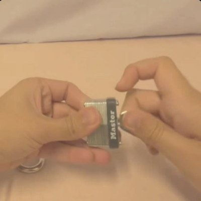
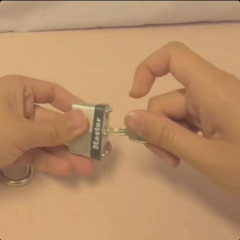
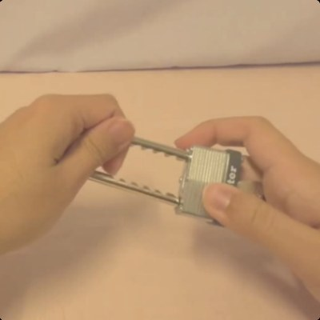

MSc Artificial Intelligence dissertation
Learning to Select Actions for Complex Hand Tasks
A comparative study of visuomotor policies and latent world models
 MSc AI Dissertation VivaViva examination
MSc AI Dissertation VivaViva examinationA comparative study of visuomotor policies and latent world models
MSc AI Dissertation Viva1 | Background | PolicyA policy is a model that learns from demonstrations (human, robot or simulated) to turn the current scene into a chunk of future actions.
 MSc AI Dissertation Viva2 | The problem | SelectionMSc AI Dissertation Viva3 | Related work | DiWA and our approach
MSc AI Dissertation Viva2 | The problem | SelectionMSc AI Dissertation Viva3 | Related work | DiWA and our approach
Left: Chandra et al. (2025), evaluated on CALVIN. This study reproduces (c). Right: illustrative frames.
MSc AI Dissertation Viva4 | Method | How our selection works
candidate 0✗candidate 1✗
candidate 2✗ candidate 3✓
candidate 3✓
candidate 4✗The real outcome is used only to measure the error. The scorer never sees it.
MSc AI Dissertation Viva5 | Technology overview
Screenshot from Welch Labs, Yann LeCun's $1B Bet Against LLMs (2026).
MSc AI Dissertation Viva6 | Research questionCan a frozen world model, acting externally, improve which candidate motion a policy chooses?
Tested offline, with the world model acting only as the final decision stage over candidates the policy already proposed.
How much does it help, and for which policy and world-model pairings?
When does selection fail, and why?
How does selecting compare with finetuning the policy inside a world model (DiWA on CALVIN)?
MSc AI Dissertation Viva7 | Method | DataMSc AI Dissertation Viva8 | Method | BenchmarkMSc AI Dissertation Viva9 | Method | CandidatesNext: what we tried to repair the latent, and what we did instead.
MSc AI Dissertation Viva10 | Method | ACT retrainingMSc AI Dissertation Viva11 | Method | CEMPThe world model shapes the pool, then picks from it, so the pool is biased towards its own taste.
About 197 candidates are scored per window instead of 5.
ACT results therefore measure the world model and the planner as one unit.
MSc AI Dissertation Viva12 | Method | Adaptive ruleOnly seed 42 needed CEMP, so seeds 43 and 44 were scored on ACT's own candidates. The pooled ACT result therefore mixes a world-model-plus-planner measurement with a plain scorer measurement. Read it as one result for this rule, not as a clean measurement of the scorer. This is why Diffusion Policy carries the main claim.
MSc AI Dissertation Viva13 | Results | World models| Model | What it is | What it showed |
|---|---|---|
| V-JEPA2-AC | Pretrained video model | -5.98% the validated gain |
| DexWM | Dexterous-hand model | +0.57% no gain, one seed |
| LeWM | Small, from scratch | -10.1% fails ranking gate |
| DINO-WM, JEPA-WM | Official 7-D models | latent only interface mismatch |
| No-AC, PointWorld | Action cut or weakened | 0.00%, +0.27% action is the mechanism |
Translation error change, Diffusion Policy, Branch 2. Matched local exposure of 100,000 items. LeWM's score does not predict the better candidate, so it is held out (Backup C). ACT with CEMP gave -0.58%, read as one unit (slides 11 to 13).
MSc AI Dissertation Viva14 | Result | HeadlineThe gain comes from reading each candidate's motion, not from the video backbone. Pooled across three seeds, 95% CI [5.43, 6.47], no retraining. Rotation error -0.96°. Win / tie / loss 49.9 / 23.2 / 27.0%. Branch 3: 5.37% of a 14.68% ceiling. The ceiling is what a perfect selector could remove from the same five candidates.
MSc AI Dissertation Viva15 | Case study | The CALVIN testMSc AI Dissertation Viva16 | Case study | DiWA on CALVIN-3.1 to +6.1 points, no measurable effect.
+14 to +40 points on every task.
Success is all or nothing, so a better pick only counts if it flips a whole episode. Selection's intervals overlap C1's on every task. C3b is read on DiWA's own evaluation loop.
MSc AI Dissertation Viva17 | Interpretation | Three conditionsThe policy must offer genuinely different motions to choose from.
The scorer's prediction must change with each candidate's motion.
Candidates must look like the data the scorer learned from.
MSc AI Dissertation Viva18 | InterpretationA pattern supported by the tested configurations, not a general law.
MSc AI Dissertation Viva19 | Comparison | DiWA's designThe loop runs offline inside the frozen world model; the finetuned policy is then evaluated in CALVIN. Point 3 follows the paper's own Appendix S.4.5.
MSc AI Dissertation Viva20 | Comparison | Our selectionComplementary, not competing: finetune when an environment-like world model and a reward exist, select when only recorded data does.
MSc AI Dissertation Viva21 | Limits and next stepsA frozen world model can improve which of a policy's own motions is chosen, without retraining, for one tested pairing.
MSc AI Dissertation VivaThank youBackup slides follow, covering the AI-use workflow, how each method was chosen, LeWM's gate, seeds, pool size, and where selection fails.
MSc AI Dissertation VivaBackup A | AI useQueried paper sets for related work and citations, then each source was skimmed manually.
Query, draft and polish workflows, with my own review and edits.
Paper discovery and critical review of chapters against a rubric.
Wrote most of the code under my specification, then tested and audited.
Research question, benchmark design, which methods to adopt, what counted as a valid result, and every claim in the dissertation.
Separate audit passes and re-runs found real defects, including a DDIM sampler indexing error, a training-exposure undershoot, and a DiWA configuration mistake. All were fixed before reporting.
Used most in the literature review and methodology, for example to find established reference methods for handling ACT and LeWM without inventing new verification tests.
MSc AI Dissertation VivaBackup B | Method provenance| Choice | Anchor | Status |
|---|---|---|
| Policy-guided candidate search (CEMP) | Cross-entropy method, initialised from the policy output, inspired by TD-MPC2 | Adapted, not a published recipe |
| Posterior-collapse fixes for ACT | KL annealing (Fu et al.), free bits (Kingma et al.), observation dropout | All tried, all failed |
| Diffusion sampling | DDIM (Song et al.), DP-T architecture (Chi et al.) | Implemented, sampler bug fixed |
| Action-conditioned scorer | V-JEPA2-AC (Assran et al.) | Head trained locally |
| Finetuning comparison | DiWA (Chandra et al.) on CALVIN, own checkpoints | Reproduced, secondary study |
| Pool size K = 5 | No literature anchor | Compute choice, ranking stable K = 2 to 20 |
| Matched exposure 100,000 items | Compute ceiling, loss still falling | Not a convergence claim |
MSc AI Dissertation VivaBackup C | LeWM gateSpearman correlation between score margin and true translation improvement. The 512-window figure was +0.537, the full test set gave -0.51.
MSc AI Dissertation VivaBackup D | Seeds and controls| Seed 42 | Seed 43 | Seed 44 | |
|---|---|---|---|
| Baseline translation error | 0.1142 | 0.1178 | 0.1191 |
| V-JEPA2-AC, Branch 2 | -6.41% | -6.09% | -5.46% |
| V-JEPA2 without action input | 0.00% | 0.00% | 0.00% |
| PointWorld proxy | +0.50% | +0.23% | +0.07% |
| LeWM rollout (unvalidated) | -10.10% | -10.06% | -10.12% |
Three seeds are a basic robustness check, not proof of stability. DexWM is single-seed by a cost decision of roughly 121 extra GPU-hours.
MSc AI Dissertation VivaBackup E | Pool sizeMSc AI Dissertation VivaBackup F | Where selection failsWindows sorted by baseline error, K = 8, Branch 2. Translation error rises 5.81% in Q1. Confidence gating does not help, because the score gap has a correlation of -0.002 with baseline error. A state-change-targeted windowing removes most of the reversal.
MSc AI Dissertation VivaBackup G | Metrics and statisticsTest windows are fixed, candidate pools frozen, future-goal access blocked, and scorer support restricted to training data.
MSc AI Dissertation VivaBackup H | Test-set handlingMSc AI Dissertation VivaBackup I | Objectives| Obj. | Status | Basis |
|---|---|---|
| 1 | Fully | Three-branch benchmark implemented as designed and used for every family reported |
| 2 | Partly | Local exposure matched, externally pretrained backbones carry an advantage not equalised |
| 3 | Within tested configurations | Whether and when selection helps determined for every combination, one positive, a likely explanation for each other |
Objectives 4 and 5 are in the Conclusion chapter's objective table. Every non-positive-route explanation is the study's own interpretation, not independently proven.
MSc AI Dissertation VivaBackup J | World model and scorerrates this candidate
The world model does not decide what to do. A prediction is not a decision, so a scorer must turn each predicted future into a score. Illustrative frames: the real prediction is made in a compact latent space, not in pixels.
MSc AI Dissertation VivaBackup K | DiWA reproduction| Task | Paper base | Our C1 | Paper DiWA | Our C3b | Our C2 (selection) |
|---|---|---|---|---|---|
| close drawer | 59.14 | 59.77 | 91.95 | 93.10 | 57.47 |
| turn on LED | 48.43 | 52.87 | 86.21 | 90.81 | 50.57 |
| move slider left | 62.15 | 57.29 | 83.33 | 82.29 | 54.17 |
| turn on lightbulb | 60.61 | 67.68 | 91.92 | 87.88 | 73.74 |
Success rate (%), three seeds. Paper values from Chandra et al. (2025), Table 1. Our runs use the authors' released checkpoints, world model and reward classifier. C1 and C2 share one evaluation harness; C3b is read on DiWA's PPO-trainer loop, so C1 and C3b come from different harnesses. Differences from the paper are within about 7 points and are expected from rerunning on different hardware and seeds. The behaviour-cloning weight αBC was set to the paper's published values after an initial run at zero collapsed two tasks.
MSc AI Dissertation VivaBackup L | References